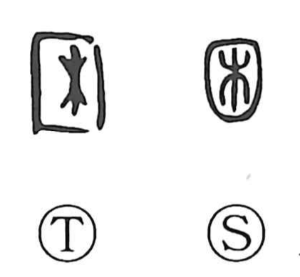

困

Kun: komaru | On: kon
be troubled ・ suffer ・ difficulty
Explanation
The ancient form depicts a piece of wood fitted into a square frame, the bar set across a gateway to halt passage—essentially a gate bolt. It is thus the original graph of the “gate-bolt” character 闔. In Yanzi Chunqiu (Miscellany, first part), the phrase 井里の困 refers to the village gate that controlled entry and exit, underscoring how strictly such gates were secured. From the image of barring a gate and prohibiting movement, the sense broadened to being hemmed in with no advance or retreat, and eventually to the general meanings “to be troubled” and “to suffer.”